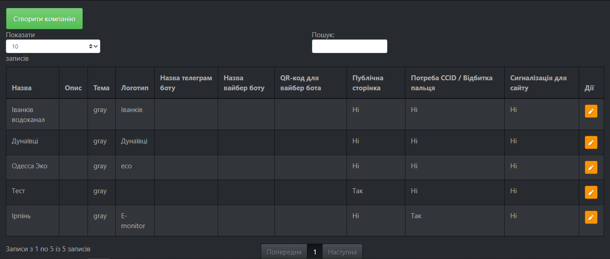
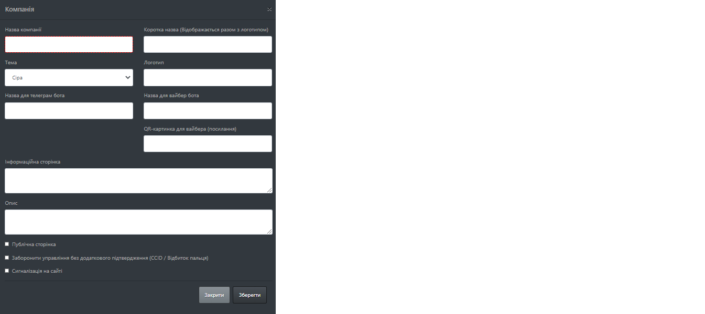

Налаштування

Меню налаштувань розбито на наступні підпункти:
Компанії- налаштування компаній на даному сервері, має доступ тільки Супер АдмінСтанції- налаштування станцій поточної компанії.Групи- налаштування груп моніторингуПохідні параметри- налаштування похідних параметрів(не справжні параметри, створені в результаті певних обчислень)Таблиці- налаштування таблиць з розділу аналітикаСхеми- налаштування схем з розділу аналітика
Компанії

Відображає таблицю з даними про компанії, дає можливіть створювати нові та редагувати існуючі компанії.
- При натисканні на кнопку
Створити компаніювікриється наступне вікно

Поля:
Назва компанії- повна назва компанії відображається у описі;Коротка назва- коротка назва, відображається поруз з логотипом компанії;Тема- кольорова тема компанії. Сайт має кілька тем. Вони міняю забарвлення і деякі зображення. Застосована тема діє на всіх користувачів компанії;Логотип- логотип компанії, що відображається з назвою, можна вибрати серед існуючих чи завантажити свій;Назва для телеграм бота- назва боту в Telegram;Назва для вайбер бота- назва боту в Viber;QR-картинка для вайбера (посилання)- посилання на Viber бота;Інформаційна сторінка- інформація, що відображається при кліку на пікторнаму компанії в меню;Опис- Опис компанії інформація для Супер Адміна;Публічна сторінка- коли вибрано, створиться посилання на публічну сторінку з показниками в групах;Заборонити управління без додаткового підтвердження (CCID / Відбиток пальця)- коли вибрана дана опція, будь-яка дія з розділу керування потребуватиме верифікації відбитку пальця чи використання спеціального цифрового носія;-
Сигналізація на сайті- при виході параметрів за межі, на сайті ввімкнеться звукове сповіщення про подію -
При натисненні кнопки edit у таблиці, відкриється вікно редагування вибраної компанії, вікно редагування має всі ті ж поля, що описано вище.
Станції

Відображає таблицю з даними про станції поточної компанії, дає можливіть створювати нові та редагувати існуючі станції.
Створити станцію
При натисканні на Cтворити станцію, з'являється наступне вікно

Назва станції- відображувана назва станції, обов'язкове поле;Адреса- адреса станції(рекомендовано брати адресу з google maps)Опис- опис станції, з'являється при натисканні на в списку станцій
в списку станційШиротатаДовгота- фізична широта станції, для визначення широти та довготи місця рекомедовано скористатися сервісом openstreetmap. Просто введіть в пошуку вашу адресу, чи знайдіть місце на карті і натиснітьПоказати адресу, і широта та довгота відобразяться у інформаційному вікніт зліва

Інформація про зайняті порти
При натисканні на Інформація про зайняті порти, з'являється наступне вікно

Опитування пристроїв відбувається по виділеним для них портах. Один порт одночасно може опитувати багато однотипних пристроїв. Приорітетом є ручне задання порту. Пристрої, що підключаються до сервера напряму(пристрій -> модем -> сервер), а також не мають унікального ідентифікатора потрібно підключати на окремий порт, при цьому ідентифікатором пристрою буде номер порту.
Зауважте: нові пристрої нових типів потрібно підключати на не зайняті порти.
Станції - Дії
- При натисканні на
 відкриється вікно редагування, відображення параметрів на карті.
При виборі станції на карті тільки вибрані тут параметри будуть відображатися.
відкриється вікно редагування, відображення параметрів на карті.
При виборі станції на карті тільки вибрані тут параметри будуть відображатися.

-
При натисканні
 відкиється вікно редагування станції з усіма полями, описаними у створенні станції
відкиється вікно редагування станції з усіма полями, описаними у створенні станції -
При натисканні
 з'явиться вікно підтвердження видалення станції. Разом зі станцією також видаляються звязані пристрої, параметри та архівні дані.
з'явиться вікно підтвердження видалення станції. Разом зі станцією також видаляються звязані пристрої, параметри та архівні дані.

Налаштування пристроїв- відкриє сторінку налаштування пристроїв вибраної станції
Налаштування пристроїв

Відображає таблицю з даними про пристрої вибраної станції, дає можливіть створювати нові, редагувати та видаляти існуючі.
Додати пристрій
При натисканні кнопки Додати пристрій відкриється наступне модальне вікно.

Тип пристрою- тип пристрою, що підключається, в залежності від типу пристрою, він матиме різний список параметрів.Назва- назва пристрою, що відображатиметься на сторінці параметрів та інших.Ідентифікатор- залежно від підключення може мати різні значення. Якщо пристрій має свій власний унікальний ідентифікатор, який можна з нього зчитати, то це буде його ідентифікатором. Наприклад, для VLT® AQUA Drive FC 202 ідентифікатор виглядає наступним чином 123456G789 . Якщо пристрій не має унікального ідентифікатора і підключений за допомогою PaspberryPI, то його ідентифікатор надає сама PaspberryPI і потрібно дивитися її конфігурацію.Справжній пристрій- пристрої можуть бути віртуальними, наприклад Derivative - пристрій контейнер для похідних параметрів, якщо опція не вибрана, стан параметру (Чи він в мережі), не впливатиме на стан станцій та груп.
Інформація про зайняті порти - дивіться детальніше у розділі станції
Пристрої - Дії
-
При натисканні
відкиється вікно редагування пристрою з усіма полями, описаними у додаванні пристрою за виключення типу пристрою, тип пристрою після створення не можна змінити. -
При натисканні
з'явиться вікно підтвердження видалення пристрою. Разом з пристроєм також видаляються звязані параметри та архівні дані. -
Додати параметри- відкриється модальне вікно редагування, параметрів вибраного пристрою.

- Для додавання параметрів до пристрою, виберіть параметри, які ви хочете додати зі списку і натисніть кнопку зберегти.
- Відображаються уже додані параметри, для редагування чи видалення параметру натисніть і ви перейдете на сторінку налаштування параметру